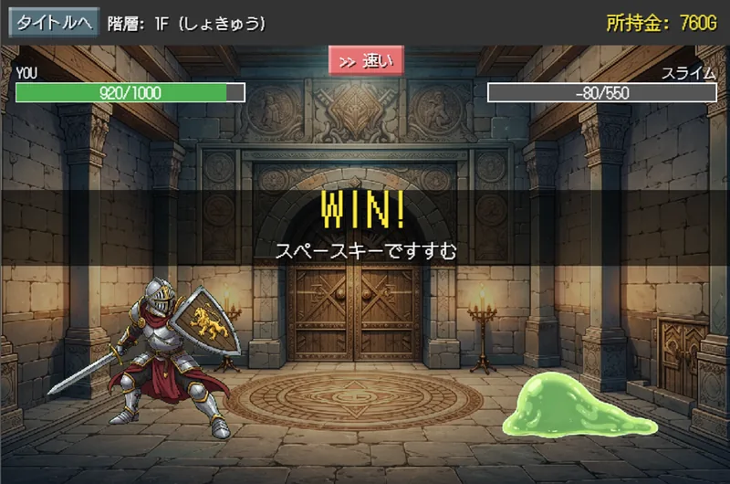

カラークロス
5×5の マスに ちらばった 3しょくの マークを、カードで けしていく パズル！ カードの うえ・した・ひだり・みぎに ある おなじ いろの マークを かぞえて、すうじと ぴったり あえば おおあたり。マークを うごかして、ばんめんを からっぽに しよう！
- 学ぶこと
- 小1「かずをかぞえる」「かずのおおきさ」。カードの上下左右にある同じ色・形のマークを数えて、カードの数とくらべます。
- 育つ力
- 数えたものを数字と結びつける力と、どのマークを動かせば数が合うかを考える先読みの力。倍率の高いマークをねらう判断で、数の大小の感覚も育ちます。

トライスクエア
5×5の マスに さんかくと しかくの ブロックを おいて、ぜんぶの マスを うめよう！ ボーナスパネルを ねらって ハイスコアを めざせ！
- 学ぶこと
- 小2「三角形と四角形」。三角形のブロックの向きを変えて組み合わせ、正方形のマスをすきまなくうめます。
- 育つ力
- 図形を頭の中で回したり組み合わせたりする、空間をとらえる力。「この向きならはまる」と試して確かめる、試行錯誤の力。

一筆迷宮
ひとふでがきの ように マスを なぞって、めいきゅうを たんけん しよう！ みちを えらんで すすみ、であった てきとは バトル！ けいけんちを ためて レベルアップし、そうびや スキルを つよくして 15かいの クリアを めざせ！
- 学ぶこと
- 教科の単元ではなく、算数の土台になる論理的な考え方。一度通ったマスは通れないルールで、すべてのマスをまわる順番を考えます。
- 育つ力
- 道すじを先まで見通す力と、行きづまったときに手順を組みなおす力（プログラミング的思考）。

Iriscraft
いろと ずけいの せかいへ！ きりとった えの いろと かたちから カードを つくって ぼうけん しよう。わざや スキルを くみあわせて ダンジョンを こうりゃく しよう！
- 学ぶこと
- 小5「割合」の入り口と、図形の見分け。絵を切り取る枠の中で、どの色や図形がどれだけの面積をしめるかが、カードの能力になります。
- 育つ力
- 量の多い・少ないを見た目でとらえる感覚と、円・三角形・四角形・六角形を見分ける力。属性の組み合わせを考える作戦の力。

アリスメティカ
たしざんや ひきざんを つかって てきを たおそう！ じょうけんが そろうと スキルが はつどう するよ。じぶんだけの デッキを つくって、かんぜんクリアを めざそう！
- 学ぶこと
- 小1〜2「たし算・ひき算」、小2「かけ算九九」。たし算とひき算で答えを作り、答えが「〇の倍数」などの条件に合うとスキルが出ます。
- 育つ力
- ほしい答えから逆に式を考える力と、九九を使って倍数を見分ける力。カードとスキルを選んで組み立てる計画の力。

ピタッと九九
5×5の ばんめんに ならんだ すうじを えらんで、スッと すべらせよう。ほかの すうじに ぶつかると たしざん されるよ。えらんだ だんの くくの こたえに なったら きえて スコアゲット！ マスが いっぱいに なる まえに、9つの しきを ぜんぶ つくれるかな？
- 学ぶこと
- 小2「かけ算九九」（2〜9の段）。数をすべらせてぶつけ、たし算で九九の答えを作ります。
- 育つ力
- 九九の答えを「〇の段の数」としてすぐ思い出す力と、あといくつで九九の答えになるかを考える、たし算と倍数の感覚。

ブラックジャック・アルカナ
トランプの ごうけいで てきを たおす カードバトル！ カードを ひいて、21を こえない ギリギリを ねらおう。「ぐうすう」「〇の ばいすう」などの スキルが そろうと、ダメージが おおきく アップ！ ぴったり 21なら ばいりつ ×7の だいダメージだ。
- 学ぶこと
- 小1〜2「たし算」、小5「偶数・奇数」「倍数」。21をこえないように、カードの合計を考えながら引きます。
- 育つ力
- 合計を見積もって、あと1枚引くかを決める判断の力。「あといくつで〇の倍数になる」と逆から考える力。

たしざんカードバトル
じぶんの カードを かさねると、すうじが たしざん されるよ。てきと おなじ すうじを つくって ぶつけよう。ボスまで たどりつけるかな？
- 学ぶこと
- 小1「たし算」（くり上がりのあるたし算まで）。カードを重ねて、敵と同じ数を作ります。
- 育つ力
- ほしい数になる組み合わせを見つける力（数の合成）。難易度で作る数の大きさが変わるので、「やさしい」から順に進めると無理なく練習できます。

ひきざんカードバトル
じぶんの カードを かさねると、すうじが ひきざん されるよ。てきと おなじ すうじを つくって ぶつけよう。1かいは ひきざん しないと つかえないよ。ボスまで たどりつけるかな？
- 学ぶこと
- 小1「ひき算」（くり下がりのあるひき算まで）。ひき算を1回は使わないと敵に出せないルールなので、かならずひき算を使います。
- 育つ力
- 大きい数からほしい数を作る逆算の力（数の分解）。「やさしい」から順に進めると無理なく練習できます。

かけざんカードバトル
じぶんの カードを かさねると、すうじが かけざん されるよ。てきと おなじ すうじを つくって ぶつけよう。てきや アイテムも でてくるよ！ ダンジョンを とっぱ できるかな？
- 学ぶこと
- 小2「かけ算九九」。カードを重ねてかけ算し、敵と同じ数を作ります。
- 育つ力
- 答えからどの九九かを思い出す力（九九の逆引き）と、わり算につながる、数をかけ算に分ける感覚。

かけざんカードバトル２
じぶんの カードを ばの カードに かさねると、すうじが かけざん されるよ。100を こえた ときの すうじで てきを こうげき！ できるだけ おおきな すうじを つくるには どうすれば いいか かんがえよう！ ボスまで たどりつけるかな？
- 学ぶこと
- 小2「かけ算九九」、小3「何十のかけ算」（30×3など）。かけ算を重ねて、100をこえる数を作ります。
- 育つ力
- どの順にかけると大きくなるかを考える見通しと、大きな数の感覚。かけざんカードバトルより作戦を考える場面がふえます。

わりざんカードバトル
じぶんの カードを ばの すうじカードに かさねると、わりざん されるよ。こたえと あまりの かずで パネルを ヒット！ ヒットする たびに まんなかの ロボの HPが へっていくよ。ぜんぶの ラウンドで ロボを たおせたら、きみは わりざんマスターだ！
- 学ぶこと
- 小3「わり算」「あまりのあるわり算」。場の数をカードでわり、商とあまりでパネルをねらいます。
- 育つ力
- 九九を使って商を立てる力と、あまりを求める力。わり算でつまずきやすい「商を立てる」ところを、ゲームの中でくり返し練習できます。

ぶんすうスロット
じぶんの ぶんすうカードを ケーキに かさねると、たしざん されるよ。3つの ケーキを おなじ かたちに できたら ラウンドクリア！ ターゲットを ねらって スコアアップを めざそう！
- 学ぶこと
- 小3〜4「分数」（同じ分母のたし算）、小5「分母のちがう分数のたし算」の入り口。ケーキの形で分数を量として見ます。
- 育つ力
- 分数を「数字」でなく「量」としてとらえる感覚と、分母がちがっても同じ大きさになることに気づく力。残りの回数を見てねらいを決める計画の力。

小数の足し算
しょうすうの カードを つかって、すうちょくせんを のばしていこう。いろいろな イベントが まっているよ。5.0を こえると ダメージを うけるので、ゲームオーバーに ならないように きをつけよう！
- 学ぶこと
- 小3「小数」（1/10の位までのたし算）。数直線の上で、小数のカードを足して進みます。
- 育つ力
- 小数の大きさを数直線で目に見える形でとらえる力と、5.0をこえないように残りを考える見積もりの力。

ナンバーブリック
てもちの すうじブロックを マスに おいていこう。たてと よこを ぜんぶ たした かずが、きめられた かずに なれば せいかい！
- 学ぶこと
- 小1〜2「たし算」（3つ以上の数のたし算）。たて・よこすべての列の合計が、決められた数になるようにブロックを置きます。
- 育つ力
- 列ごとの合計を同時に考える論理的な思考と注意の力。数独のように、条件に合う置き方をしぼりこむ力。

たしざんすごろく
えらんだ すうじの ぶんだけ、すごろくの マスを すすめるよ。のこりじかんを ふやしたり、ポイントを かせいだり、アイテムを あつめたり しながら、100マスめを めざそう！
- 学ぶこと
- 小1「くり上がりのあるたし算」。すごろくの盤面が、10のまとまりで数を見る形になっています。
- 育つ力
- 「7から15までは、3と5で8」のように、10を区切りにして考える力（さくらんぼ計算の考え方）。たし算を頭の中で思い浮かべる力。

モジュロブリッツ
じぶんの すうじを マスの すうじに かさねると、たしざん されるよ。たてか よこに おなじ すうじを 3つ つなげると きえるよ。コンボを つくって クリアを めざそう！
- 学ぶこと
- 小1「たし算」（1けた＋1けた）。10をこえたら一の位だけが残るルールです（4+7=11→1）。
- 育つ力
- たし算の答えをすばやく出す力と、一の位に注目する感覚。同じ数をそろえるために先を読む力。ガイドモードで慣れながら始められます。

タリーブリッツ
うえから すうじブロックを ねらった ところに おとそう！ ぴったり 10を つくると ブロックが きえるよ。10より おおきく なると おじゃまブロックに なっちゃう。ぜんぶの ラウンドを クリア できるかな？
- 学ぶこと
- 小1「10をつくる」（くり上がりのあるたし算の前の段階）。ブロックを落として、ぴったり10を作ります。
- 育つ力
- 「あといくつで10」がすぐ分かる、10の合成・分解の感覚。自分のタイミングで落とせるので、時間に追われずじっくり考えられます。

たすてん
たてや よこで たして 10に なるように、パネルを うごかそう！ じゅうじに けせる 🎆 や、すきな すうじを けせる 🌠 を つかって、もくひょうスコアを クリア していこう！
- 学ぶこと
- 小1「たし算」と「10をつくる」。となり合う数の合計がちょうど10になるように、パネルを動かします（3と7、2・3・5など）。
- 育つ力
- 2つ・3つの数で10を作る組み合わせの感覚と、盤面を見てどこに置けば10ができるかを探す力。

わりざん鉱山
ひとふでがきで ダンジョンを たんけんして、ほうせきを たくさん あつめよう！ アイテムを つかって ダンジョンを クリア しよう。ほうせきに つられて しっぱい しないように ちゅういしてね。
- 学ぶこと
- 小3「わり算」「あまりのあるわり算」。わる数の分だけマスをかこんで、ほうせきを同じ数ずつに分けます。わり算をまだ習っていなくても遊べます。
- 育つ力
- わり算が「同じ数ずつ分ける」ことだと、目で見て分かる力。あまりを考えると有利に進められるので、商とあまりを意識する力も育ちます。

かけざんダンジョン
じぶんの カードで かけざんを つくると、しかくが できるよ。てきや いわを よけて、しかくを マップに おいていこう。⚔ や ⛏ も つかってね。ぜんぶで 10ステージ、かんぜんクリアを めざそう！
- 学ぶこと
- 小2「かけ算」、小4「長方形の面積」の入り口。たて×よこのかけ算が、そのまま四角の大きさになります。
- 育つ力
- かけ算を「たて・よこにならんだ数」として目でとらえる力と、マップに四角をうまく置く空間の見通し。

タイピング・サガ
タイピングで おかねを かせいで、ぶきや ぼうぐ、パワーアップアイテムを かって、とうを のぼっていこう。さいごの ボスを きみは たおせるかな？
- 学ぶこと
- 小3「ローマ字」と、情報活用能力（キーボード入力）。ひらがなの言葉をローマ字で打ちます。
- 育つ力
- ローマ字のつづりとキーの位置をおぼえる力と、正確に速く打つ力。

日本地図クイズ
とどうふけん、けんちょうしょざいち、ちほうを、クイズで たのしく おぼえちゃおう！ えらぶだけ だから きがるに あそべるよ。タイムも きそえるよ！
- 学ぶこと
- 小4 社会「都道府県」。都道府県の名前と位置、県庁所在地、地方区分をクイズでおぼえます。
- 育つ力
- 地図の上で場所を思い浮かべる力。タイムをきそえるので、くり返し取り組みたくなります。

トレジャー・クラフト
ぼうけんで てにいれた そざいで、ぶきや ぼうぐを つくろう！ つよくなって、もっと むずかしい ばしょを たんけん しよう！
- 学ぶこと
- 小1〜2「たし算・ひき算」（お金の計算）。材料を売ったり、お店で買い物をしたりしながら、お金をやりくりします。
- 育つ力
- 残りのお金を考えて買い物をする計画の力と、材料を集めて組み合わせる段取りの力。

割って！九九ポーカー
くくカードの こたえに なる くくを えらんで、てふだを つくろう！ ポーカーの やくと ドラで てんすうが きまるよ。ショップで やくや すうじを つよくして、7ステージの とっぱを めざせ！
- 学ぶこと
- 小2「かけ算九九」、小3「わり算」、小5「約数・倍数」の入り口。九九の答えから、その答えになる九九を選んで手札を作ります。
- 育つ力
- 答えから式を探す、九九の逆引きの力。役やドラを考えて数の組み合わせを選ぶ、作戦の力。

アビスラビリンス
まおうに なって、ちかに へやと つうろを つくり、まものを そだてて、せめてくる ゆうしゃたちを むかえうとう！ 「素（もと）」を あつめて へやを つよくし、まものを しんか させよう。6つの エリアを ぜんぶ まもりきれば、まおうの ものがたりが かんけつ するよ。
- 学ぶこと
- 教科の単元ではなく、数を使った計画づくり。限られた資源で部屋を作り、魔物を育てて、ダンジョンを守ります。
- 育つ力
- 何に使うかを決める優先順位の判断と、先を見通す計画の力。数値の増え方を見て強さをくらべる力。

ワードランナー
にほんごを みて、えいたんごを タイピング！ がくねんや 「ようび」「どうぶつ」などの テーマを えらぼう。さきに おぼえてから うつ 「れんしゅう」と、おもいだして うつ 「ちょうせん」で あそべるよ。まちがえると HPが へるので、ていねいに うとう。
- 学ぶこと
- 小3〜6「外国語活動・外国語」の英単語（学年やテーマ別）。日本語を見て、英単語を打ちます。
- 育つ力
- 英単語のつづりを「見て・おぼえて・思い出す」力。タイピングの力も同時に育ちます。

ステラ・アレア
3つの サイコロを ふって、でた めの ごうけいに 「やく」「スキル」「★」を かけざん！ ガチャで サイコロを あつめ、スキルを そだてて 7ステージを クリア しよう。ふりなおしや コインの つかいかたも さくせんの うち。
- 学ぶこと
- 小1「たし算」、小2「かけ算」、小5「偶数・奇数」「倍数」。3つのサイコロの和に、役やスキルの倍率をかけます。
- 育つ力
- 数の性質を使って得点をのばす考え方と、ふりなおしやコインの使い道を考える計画の力。出やすさ（確率）の感覚も育ちます。

トレジャークラフト2
きを きり、いしを ほり、どうぐを つくって いきのびよう！ ちかふかくの こうせきを あつめて もんを たて、いせかいの まおうを たおそう。
- 学ぶこと
- 教科の単元ではなく、数と空間を使った段取り。材料の数を数えて道具を作り、地図と方角を読みながら探検します。
- 育つ力
- 必要な材料を逆算して集める計画の力と、地図の上で位置や方角をとらえる空間の感覚。回路づくりでは、しくみを組み立てる論理的な思考（プログラミング的思考）も育ちます。

ぶんすうラボ
ぶんすうの カードを しけんかんに いれて、ちょうど 1を つくろう！ 1を こえると バーストして しけんかんが こわれるよ。おなじ ぶんぼ・ちがう ぶんぼの「やく」や、ガチャで あつめた スキルで とくてんを のばして、5ステージを クリアしよう。
- 学ぶこと
- 小3〜4「分数」、小5「分母のちがう分数のたし算」。試験管の目もりで分数を量として見ながら、組み合わせてちょうど1を作ります。
- 育つ力
- 分数の大きさを量でとらえる感覚と、分母がちがう分数をそろえて考える、通分の考え方。

ジュークボックス
♪♫♪♬
🎶
▶